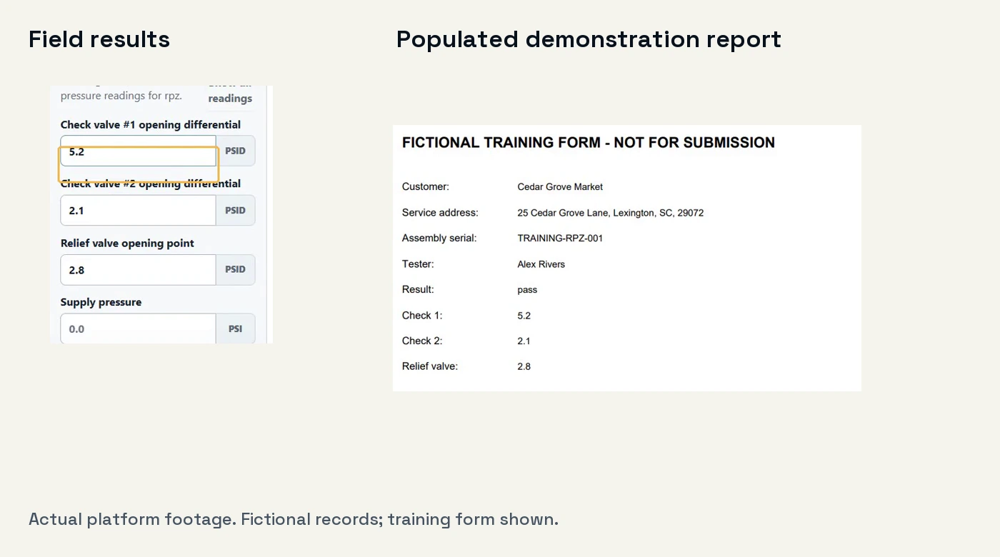

Your last test
shouldn’t start
a second shift. Backflow Testing Software
Spend less of your evening filling backflow forms. StrataWorks Backflow Operations connects field results, supported reports, and invoicing in one workspace.
For the owner in the field and the team finishing the paperwork.
Setup assistance included. Up to five staff logins.
Actual platform footage with fictional records and a training report.
The readings are already there.
Put them to work.
You’ve recorded the customer, assembly, and test results. Use that information to produce the supported report, with less manual form filling at the end of the day.

Less repeated form filling.
Keep recorded test results connected to the supported report you need to review.
A clearer field-to-office handoff.
Keep results with the right customer and assembly, so the office can review the work in context.
The next steps stay together.
Bring schedules, customer history, reports, and invoices into one connected workflow.
Available nationwide, with a focus on South Carolina, North Carolina, Georgia, and Texas. Specific forms and submission methods depend on your configured jurisdiction. Ask about your forms before subscribing.
Put the cost beside
the time you spend.
How much of your evening goes into filling forms and organizing completed work? For $300/month, give your team one connected workspace for scheduling, field testing, supported reports, and invoicing—with help getting set up.
Want to talk with us first?StrataWorks Backflow Operations
$300per month
Includes up to five staff logins.
Lock in the $300 monthly base rate for 60 months while your subscription stays continuously active.
Limited spots remaining at the $300 rate.
- Customer, location, and assembly records
- Scheduling, routing, field testing, and test history
- Reports and configured municipality forms
- Invoicing, receivables, and payment workflows
- Office and field roles
- Setup assistance and the tutorial library
Online signup is opening soon. Contact us to arrange your setup.
Ask to lock in $300Checkout opens in a new tab. After payment, return here and send your company setup details.
Standard setup is ready within three business days after payment and completed setup details.
Your first monthly payment is collected at checkout. Applicable tax is calculated by Stripe. Custom imports, new forms, and optional provider services are scoped separately before work begins.
What happens after you subscribe?
- 1
Send your setup details
Company information, staff email addresses, municipalities, and your current data source. No consultation is required for standard setup.
- 2
We prepare your workspace
We verify the subscription and configure your company access. Standard setup takes up to three business days once payment and details are complete.
- 3
Sign in and start working
Look for your access email. Follow the setup checklist and video guides, and contact us if you need help.
Know what
you’re signing up for.
Do I need to book a demo first?
No. Start with the short video above. If you’d like to see the workflow for your business in more detail, a personal walkthrough is available.
Will my account be ready immediately?
Your workspace is prepared after payment and completed setup details. Standard setup is ready within three business days. Custom migration or new form requirements are reviewed separately.
Which staff can use the five logins?
The plan includes up to five individual staff accounts for your office and field team. Let us know who needs access when you send the setup form.
How does the 60-month rate guarantee work?
The $300 monthly base subscription rate stays the same for 60 months from signup while your subscription remains continuously active. The guarantee ends if you cancel. Applicable tax and separately scoped services are additional.
Are my municipality’s forms and submissions supported?
Forms and submission methods depend on configured jurisdiction requirements. If your business requires a specific form or portal integration, check with us before subscribing.
Can I bring data from another system?
A Jobber customer CSV import workflow is verified. Tell us which records you want to move. Other sources and more extensive migrations need their own agreed scope.
How do invoices and payments work?
The platform keeps invoices, receivables, and payment history with the work. Optional payment-provider connections are configured for your business.
How do I get help or discuss billing?
Email james@strataworks.tech or call (803) 386-7728. Subscription terms and billing details are provided at checkout; contact us with questions before purchasing.
A question before
you get started?
Ask about your forms, request setup, or arrange an optional demo. Tell us what your business needs and we’ll follow up by email.